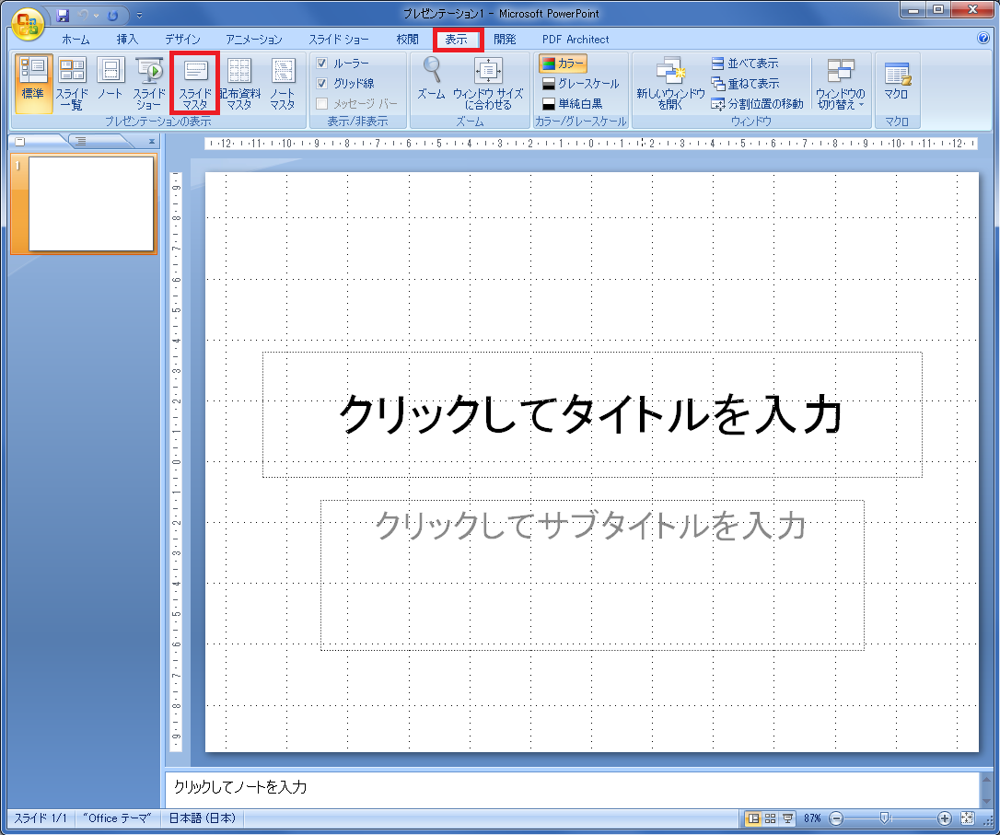
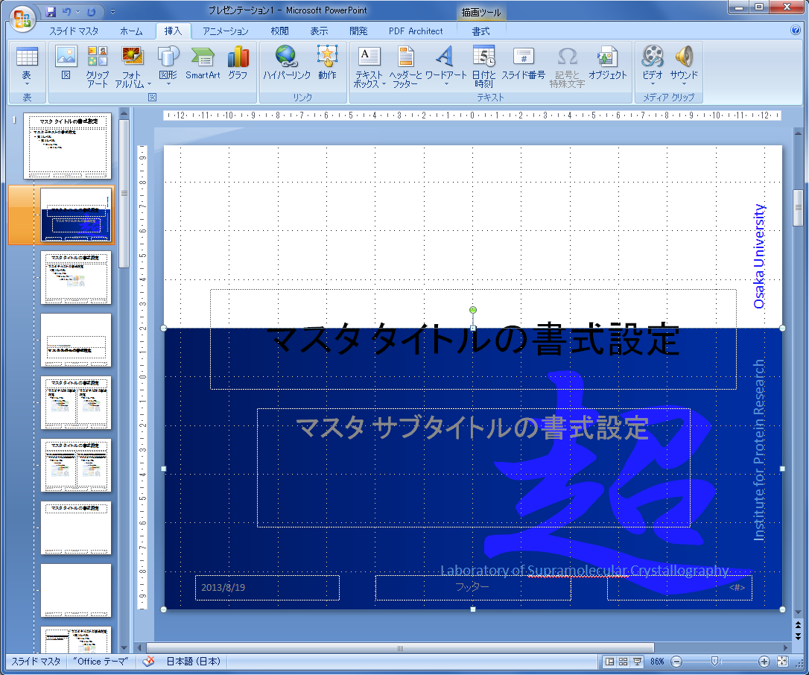
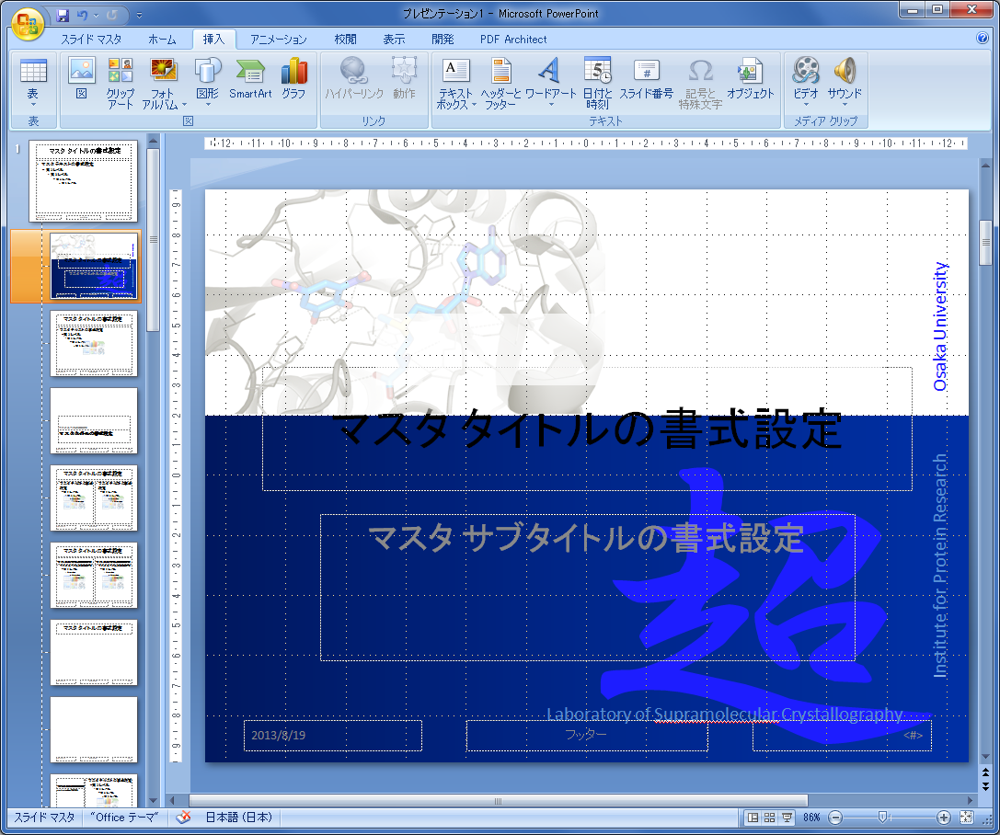
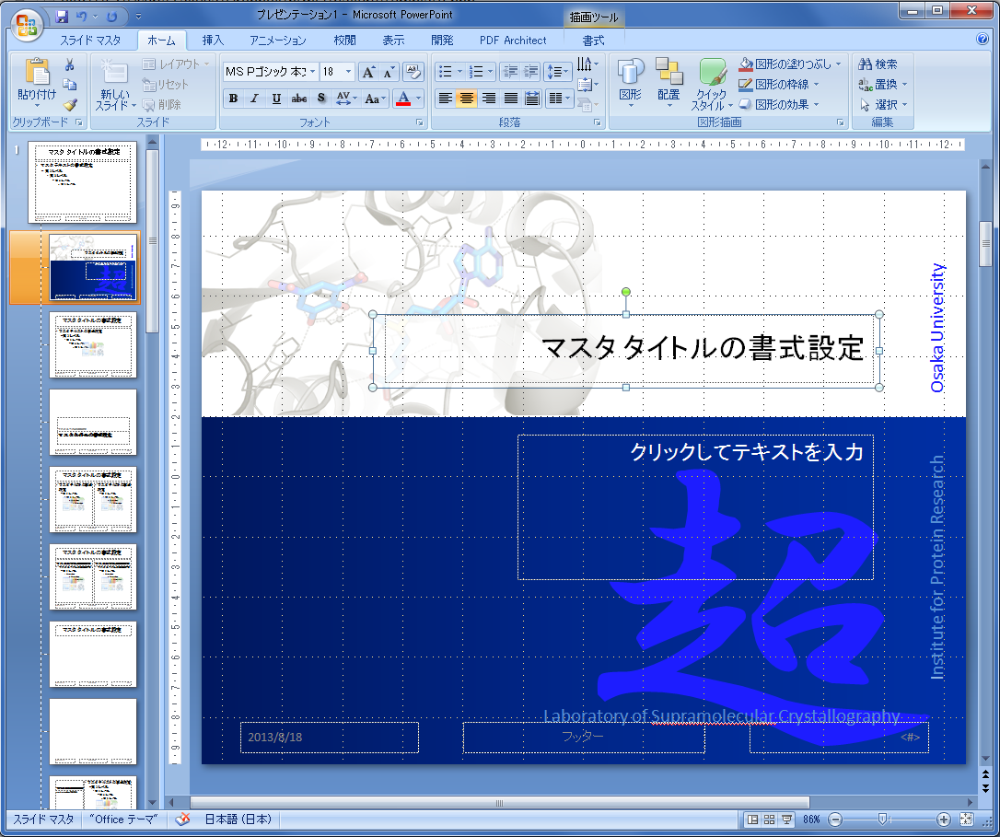
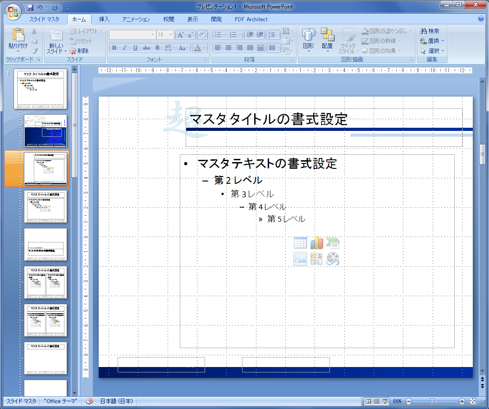
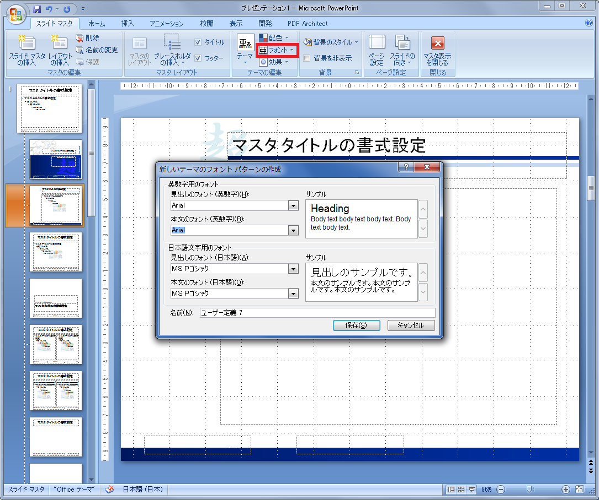

Home > その他 > PowerPointオリジナルテンプレート
オリジナルテンプレート
研究発表の際に使えるPowerPointオリジナルテンプレートの作り方を紹介します。PowerPointで資料を作るとき、何か味気ない、タイトルの位置が邪魔、見づらい、フォントを統一したいなど不便に感じることはないでしょうか。 (そんなこと感じたことないという人が大多数だと思いますが・・・) PowerPointに最初から入っているテンプレートを使うのもいいですが、 自分の使いやすいオリジナルのテンプレートがあると何かと便利です。自分の研究に関するイラストや図、学章を使えばオリジナリティも出ます。 以下、私が作ったテンプレートです。参考までに・・・
スライドマスタ
- スライドマスタ 説明ではPowerPoint2007を使用します。テンプレートの作成にはスライドマスタという機能を使います。 スライドマスタの開きかたは、"表示 → スライドマスタ"です。 
- タイトルスライド タイトルスライドを作ります。特に難しいことはなく、文字や図を挿入します。
- タイトルとコンテンツ コンテツのスライドも同じように文字や図を挿入し、タイトルの位置やフォントサイズを変更します。 簡単な図形(長方形など)を少し入れるだけで、タイトルが見やすくなります。
- フォント スライドマスタでフォントを変更することで、フォントを統一することができます。
- 完成 完成したら "スライドマスタ→マスタ表示を閉じる" でスライドマスタを閉じます。
- テンプレートの保存 デザインタブからプルダウンメニューを出して、"現在のテーマを保存" で保存します。

文字に関しては注意が必要です。文字には2種類、スライドマスタを閉じたときに編集できる文字と編集できない文字があります。
・編集できない文字は、"挿入→テキストボックス"
・編集できる文字は、"スライドマスタ→プレースホルダの挿入→テキスト"
青のグラデーションを使った長方形と、その上に文字(編集できない文字)を置きました。 
PyMOLで作成した図も置いてみました。 (リガンド結合部位の表示で作成した図を加工しました。) 
タイトルとサブタイトルを動かして完成です。このとき、作った背景に合うようにフォントのサイズや色も変更します。 

"スライドマスタ→フォント→新しいフォントパターンの作成"で変更します。英数字と日本語を別々に選択することも可能です。 個人的には、英数字：Arial、日本語：MS Pゴシックが好みです。 
作成したテンプレートは "ホーム→新しいスライド" から使用します。
保存したテンプレートは同じプルダウンメニューの "ユーザー定義" のところから読み込むことができます。
PyMOL
- インストール
- 基本操作
- コマンドの基本
- 作図に役立つコマンド+α
- 静電ポテンシャルの表示
- 疎水性度の表示
- 保存度による色分け
- 3DCGプリント
- ラベル
- 分子の重ね合わせ
- 水素結合
- 距離の測り方
- カメラ方位
- リガンド結合部位の表示
- 電子密度マップ mesh
- 電子密度マップ volume
- 電子密度マップ FFT
- ボール&スティックモデル
- cavityの表示
- pocketの表示
- 相互作用部位の表示
- 動画の作り方 GUI編
- 動画の作り方 コマンド編
- 二次構造の割り当て（DSSP）
- 透明
- 温度因子
- 点変異の導入
CCP4mg
3Dプリンター
おうちでできる構造解析
- 概要
- インストール & 準備
- iMosflm
- SCALA
- Matthews係数
- 分子置換モデル
- HKL2000 概要
- HKL2000
- HKL2000 scalepack2mtz
- 空間群の決定
- HKL2000 ログを読む
その他
- 保存度による色分け
(chimera編) - Excelでまとめる
アライメント - PowerPoint
オリジナルテンプレート - アニメーションGIFの
作り方 giam編 - アニメーションGIFの
作り方 ImageMagick編 - 初めてのPDB登録